NCERT Solutions for Class 8 Science Chapter 17 Stars and The Solar System
Topics and Sub Topics in Class 8 Science Chapter 17 Stars and The Solar System:
| Section Name | Topic Name |
| 17 | Stars and The Solar System |
| 17.1 | The Moon |
| 17.2 | The Stars |
| 17.3 | Constellations |
| 17.4 | The Solar System |
| 17.5 | Some Other Members of the Solar System |
Stars and The Solar System Class 8 Science NCERT Textbook Questions
Choose the correct answer in Questions 1-3.
Question 1.
Which of the following is NOT a member of the solar system?
(a) An asteroid
(b) A satellite
(c) A constellation
(d) A comet
Answer:
(c) A constellation
Question 2.
Which of the following is NOT a planet of the sun?
(a) Sirius
(b) Mercury
(c) Saturn
(d) Earth
Answer:
(a) Sirius
Question 3.
Phases of the moon occur because
(a) we can see only that part of the moon which reflects light towards us.
(b) our distance from the moon keeps changing.
(c) the shadow of the Earth covers only a part of the moon’s surface.
(d) the thickness of the moon’s atmosphere is not constant.
Answer:
(a) we can see only that part of the moon which reflects light towards us.
Question 4.
Fill in the blanks.
(a) The planet which is farthest from the Sun is _____
(b) The planet which appears reddish in colour is ______
(c) A group of stars that appear to form a pattern in the sky is known as a _____
(d) A celestial body that revolves around a planet is known as ______
(e) Shooting stars are actually not _____
(f) Asteroids are found between the orbits of and ______
Answer:
(a) Neptune
(b) Mars
(c) constellation
(d) satellite
(e) stars
(f) Mars, Jupiter
Question 5.
Mark the following statements as true (T) or false (F).
(a) Pole star is a member of the solar system.
(b) Mercury is the smallest planet of the solar system.
(c) Uranus is the farthest planet in the solar system.
(d) INSAT is an artificial satellite.
(e) There are nine planets in the solar system.
(f) Constellation Orion can be seen only with a telescope.
Answer:
(a) False
(b) True
(c) False
(d) True
(e) False
(f) False
Question 6.
Match items in column A with one or more items in column B.
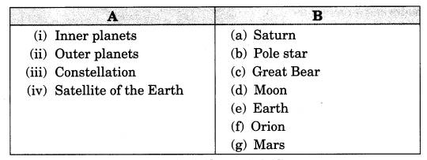
Answer:
(i) (e) (g)
(ii) (a)
(iii) (c) (f)
(iv) (d)
Question 7.
In which part of the sky can you find Venus if it is visible as an evening star?
Answer:
In west side of the sky.
Question 8.
Name the largest planet of the solar system.
Answer:
Jupiter
Question 9.
What is a constellation? Name any two constellations.
Answer:
A group of stars which has a recognizable shape is called a constellation.
Example: Ursa Major, Orion
Question 10.
Draw sketches to show the relative positions of prominent stars in
(i) Ursa Major and
(ii) Orion
Answer:
(i) Ursa Major
(ii) Orion
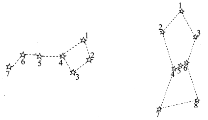
Question 11.
Name two objects other than planets which are members of the solar system.
Answer:
Comets and asteroids.
Question 12.
Explain how you can locate the Pole star with the help of Ursa Major.
Answer:
Pole star can be located with the help of two stars at the end of Ursa Major. Imagine a straight line passing through these stars. Extend the imaginary line in North direction. This line is about five times the distance between two stars. A star is seen in this direction which is called Pole star.
Question 13.
Do all the stars in the sky move? Explain.
Answer:
No, all the stars do not move in the sky. Due to the rotation of the Earth on its own axis stars seem to move in the sky.
Question 14.
Why is the distance between stars expressed in light years? What do you understand by the statement that a star is eight light years away from the Earth?
Answer:
The stars are very far away from the Earth and it is not convenient to express such distances in kilo¬metres. Thus, such large distances are expressed in unit known as light year.
If we say that a star is eight light years away from Earth, it means that the light from star will reach the Earth in eight years.
Question 15.
The radius of Jupiter is 11 times the radius of the Earth. Calculate the ratio of the volumes of Jupiter and the Earth. How many Earths can Jupiter accommodate?
Answer:
Let the radius of Earth be r units.
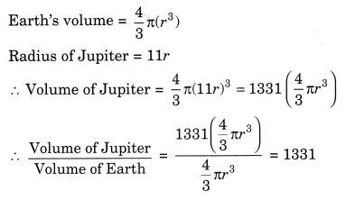
Question 16.
Boojho made the following sketch (Fig. 17.6) of the solar system. Is the sketch correct or not, correct it.
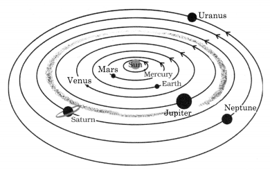
Answer:
No, the sketch made by Boojho is not correct. The correct sketch is given below:
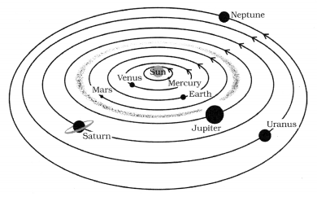
Stars and The Solar System Class 8 Science NCERT Intext Activities Solved
Activity 1 (NCERT Textbook, Page 216)
Observe the moon continuously for several nights, preferably from one full moon to the next. Make a sketch of the moon every night in your notebook and note the day from the day of the full moon. Also, note every day the part of the sky (east or west) in which the moon is seen.
Solution:
We find that there is a change in the shape of the moon every day and the moon appears to be perfectly round on the full moon day. On the fifteenth day of the month, we see that the moon is not visible even if the sky is clear.
Thus, the moon goes on increasing every day, till on the fifteenth day and the full face of the moon is visible. After the full moon the bright part of the moon goes on decreasing every night and by another fifteen days again new moon is formed.
Activity 2 (NCERT Textbook, Page 217)
Take a big ball ora pitcher. Paint half of it white and half black.
Go out into the playground with two of your friends. Draw a circle of radius of about 2 m on the ground. Divide the circle into eight equal parts as shown in Fig. 17.1.
Stand at the centre of the circle. Ask a friend to hold the ball at different points of the circle. Ask her to keep the white portion of the ball always towards the Sun. If you are performing this activity in the morning then the white portion of the ball should be kept towards the east. If the activity is being performed in the afternoon then the white portion of the ball should be kept towards the west. In each case the line dividing the white and black portions is kept vertical.
Standing at the centre of the circle observe the visible white portion of the ball while your friend stands at the points on the circle marked earlier. Draw the shape of the white portion as you see it. Compare your drawings with the different phases of the moon as shown in Fig. 17.8.
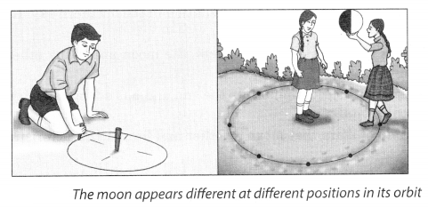
Solution:
Do it yourself.
Activity 3 (NCERT Textbook, Page 218-219)
Draw a circle of about 1 m diameter on the ground. Ask one of your friends to stand at the centre of this circle. You revolve around your friend in such a manner that your face always remains towards him. Can your friend see your back? How many rotations did you complete in one revolution? The moon revolves around the Earth in a similar manner.
Solution:
No, my friend cannot see my back. One rotation is completed in one revolution.
It is concluded that the moon completes one rotation on its axis as it completes one revolution around the Earth.
Activity 4 (NCERT Textbook, Page 220)
Stand in the centre of a big room and start rotating. In which direction will the objects in the room appear to move? Do you see them moving in the direction opposite to your motion?
Solution:
The object appear to move in the opposite direction to our motion.
Activity 5 (NCERT Textbook, Page 221)
Take an umbrella and open it. Make about 10-15 stars out of white paper. Paste one star at the position of the central rod of the umbrella and others at different places on the cloth neartheend of each spoke (Fig. 17.2). Now rotate the umbrella by holding its central rod in your hand. Observe the stars on the umbrella. Is there any star which does not appear to move? Where is this star located?
If there were a star located where the axis of rotation of the Earth meets the sky, could this star also be stationary?
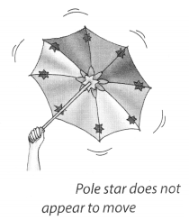
Solution:
Yes, the star situated at the central rod of the umbrella does not appear to move.
Star located at the axis of the earth meets the sky is also stationary.
Thus, the Pole star situated in the direction of the earth’s axis does not appear to move.
Activity 6 (NCERT Textbook, Page 222)
Observe this constellation (Ursa Major) for a few hours. Do you find any change in its shape? Do you find any change in its position?
Solution:
It is observe that the shape of the constellation remains the same but the constellation appears to move in the sky from east to west.
Activity 7 (NCERT Textbook, Page 222-223)
This activity should be performed on a clear moonless night during summer at about 9.00 p.m. Look towards the northern part of the sky and identify Ursa Major. You may get help from elders in your family. Look at the two stars at the end of Ursa Major. Imagine a straight line passing through these stars as shown in Fig. 17.3. Extend this imaginary line towards the north direction. (About five times the distance between the two stars.)
This line will lead to a star which is not too bright. This is the Pole star. Observe the Pole star for some time. Note that it does not move at all as other stars drift from east to west.
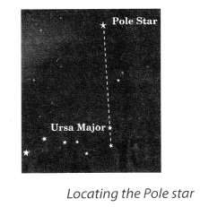
Solution:
Pole star is a prominent star and is aligned with the Earth’s axis of rotation. So Pole star does not move at all with respect to other stars.
Activity 8 (NCERT Textbook, Page 223)
During a summer night, observe Ursa Major 3-4 times at an interval of 2 to 3 hours. Also locate the Pole star each time. Does Ursa Major appear to move from east to west? Does it appear to revolve around the Pole star? Compare your observations with those in Fig. 17.4.

Solution:
It is concluded that all the stars of Ursa Major appear to revolve around the Pole star.
Activity 9 (NCERT Textbook, Page 226)
Go out into the playground with four or five of your friends. Draw four circles of radii 1 m, 1.8 m, 2.5 m and 3.8 m, all having a common centre (Fig. 17.5).
Ask one of your friends to stand in the centre and represent the Sun. Your other four friends may represent Mercury, Venus, Earth and Mars.
Ask your friends to move around the Sun in anti-clockwise direction in their own orbits (Fig. 17.5). Do they collide with one another?
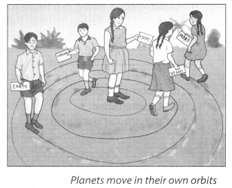
Solution:
No, they do not collide with one another, because they have fixed orbits of their own. In a similar way, planets move in their own orbits.
Activity 10 (NCERT Textbook, Page 227)
Find out from some newspaper or from an almanac the time when Ve- ‘ nus is visible in the sky. You can easily recognise Venus by its brightness. Remember that Venus cannot be seen very high in the sky. You must try to observe Venus either 1 -3 hours before sunrise or 1-3 hours after sunset.
Solution:
Do it yourself.
NCERT Solutions for Class 8 Science Chapter 17 – 1 Mark Questions and Answers
Question 1.
Name the instrument you will use to observe rings of the planet Saturn. [MSE (Chandigarh) 2008]
Answer:
Telescope.
Question 2.
Which star appears to remain fixed to us ? What is / are the name/s given to it ? [DAV2008]
Answer:
Pole star appears to be fixed. Its name is Dhruv Tara.
Question 3.
Planet ………….. is known to have the largest number of natural satellites. [KVS 2008]
Answer:
Jupiter.
Question 4.
Name any two constellations that have seven prominent stars in them. [DAV2007]
Answer:
Ursa Major and Ursa Minor have seven prominent stars in them.
Question 5.
Name the planet that was predicted before it was actually observed. [KVS 2005]
Answer:
Pluto
Question 6.
Why the stars are not visible during the day ? [MSE (Chandigarh) 2005]
Answer:
The stars are not visible during the day because of the glare of bright sunlight.
Question 7.
Which of the following is NOT a member of the solar system ? [NCT2010]
- An asteroid
- A satellite
- A constellation
- A comet
Answer:
A satellite.
Question 8.
Which of the following is NOT a planet of the sun ? [NCT2010]
- Sirius
- Mercury
- Saturn
- Earth
Answer:
Sirius.
Question 9.
Phases of the moon occur because [NCT2010]
- we can see only that part of the moon which reflects light towards us.
- our distance from the moon keeps changing.
- the shadow of the Earth covers only a part of the moon’s surface. ’
- the thickness of the moon’s atmosphere is not constant. ‘
Answer:
We can see only that part of the moon which reflects light towards us.
Question 10.
Fill in the blanks : [NCERT]
- The planet which is farthest from the Sim is …………
- The planet which appears reddish in colour is ……………
- A group of stars that appear to form a pattern in the sky is known as a ………….
- A celestial body that revolves around a planet is known as ……………..
- Shooting stars are actually not ……………
- Asteroids are found between the orbits of …………. and …………..
Answer:
- Neptune
- Mars.
- Constellation.
- Satellite.
- Stars
- Mars, Jupiter.
Question 11.
Mark the following statements as true (T) or false (F). [NCERT]
- Pole star is a member of the solar system. ( )
- Mercury is the smallest planet of the solar system. ( )
- Uranus is the farthest planet in the solar system. ( )
- There are nine planets in the solar system. ( )
- INSAT is an artificial satellite. ( )
- Constellation Orion can be seen only with a telescope. ( )
Answer:
- T
- T
- F
- F
- T
- F
Question 12.
Match the items in column I with one or more items in column II
| Column-I | Column-II |
| (a) Star | (i) Saturn |
| (b) Constellation | (ii) Pole star |
| (c) Planet | (iii) Great Bear |
| (d) Satellite of the earth | (iv) Moon |
| (v) Earth | |
| (vi) Orion | |
| (vii) Mars |
Answer:
| Column-I | Column-II |
| (a) Star (b) Constellation (c) Planet (d) Satellite of the earth |
(i) Pole star (iii) Great Bear, (vi) Orion (iii) Saturn, (v) Earth, (vii) Mars (iv) Moon |
Question 13.
In which part of the sky can you find Venus if it is visible as an evening star ? [NCERT]
Answer:
Venus appears in the western sky as an evening star.
Question 14.
What is full moon day ?
Answer:
The day on which the whole disc of the moon is visible is known as the full moon day.
Question 15.
Can you see the back side of the moon from the earth ?
Answer:
No, we cannot see the back side of the moon from the earth.
Question 16.
Does the moon have atmosphere and water ?
Answer:
No, moon doesn’t have atmosphere or Water.
Question 17.
Can you hear sound on the moon ?
Answer:
No, we cannot hear sound on the moon because there is no medium in which sound can travel.
Question 18.
What is an orbit ?
Answer:
The path taken by planets to revolve around the sun is called an orbit.
Question 19.
Why do the planets not collide while revolving around the sun ?
Answer:
Planets move in their own orbits, so they don’t collide with each other.
Question 20.
Is the earth a satellite of the sun ?
Answer:
No, even though the earth revolves around the sun but it is not a satellite of the sun, because satellites revolve around the planets.
Question 21.
Why is it difficult to observe Mercury ?
Answer:
Mercury is closest to the sun, so it is hidden by the glare of the sun. So, it cannot be seen.
Question 22.
Name two planets having no satellites.
Answer:
Mercury and Venus.
Question 23.
What are meteor showers ?
Answer:
When the earth crosses the tail of the comet, swarms of meteors are seen, known as meteor showers.
Question 24.
What is meant by remote sensing ?
Answer:
Collecting information from a distance by satellites is known as remote sensing.
Question 25.
Name any three celestial bodies.
Answer:
The stars, Sun and Moon are celestial bodies.
Question 26.
Why do we classify the Sim as a star ?
Answer:
The Sun is a star because it continuously emits light and heat. It appears large as compared to other stars because it is nearer to the Earth.
Question 27.
Name the planets that were known to ancient astronomers.
Answer:
The planets known to ancient astronomers were Mercury, Venus, Earth, Mars, Jupiter and Saturn.
Question 28.
The artificial satellites are used for ………., ……., ……….. and …………
Answer:
Long distance communication, research, remote sensing and defence.
Question 29.
Which of the following is a star ?
- Alpha Centuari
- Diebos
- Orion
- Phobos
Answer:
Alpha Centuari.
Question 30.
Ursa Major is
- a star
- seen only with a telescope
- a constellation
- a natural satellite of Mars
Answer:
a constellation.
Question 31.
The stone like objects entering the Earth’s atmosphere appear as …………. of …………. at night and these are called …………
Answer:
Streak, light, meteors.
Question 32.
A celestial body that appears to change its position with respect to the stars is called ………….
Answer:
Earth.
Question 33.
Which planet is nearest to the Earth ?
Answer:
Venus.
Question 34.
Name two planets which are near to the Sun.
Answer:
Mercury and Venus.
Question 35.
Which planet moves in a different plane ?
Answer:
Pluto.
Question 36.
Which planet of the solar system is the hottest ?
Answer:
Venus.
Question 37.
What are asteroids ?
Answer:
They are very small planets of rock and metal which revolve around Sun mainly between Mars and Jupiter.
Question 38.
Name the branch of science which deals with the study of the universe.
Answer:
Astronomy.
Question 39.
What is the shape of the Earth ?
Answer:
The Earth is not a perfect sphere, but is somewhat flattened at the poles and is bulging at the equator.
Question 40.
What is solar system ?
Answer:
The sun and the nine planets along with their natural satellites constitute the solar system.
Question 41.
What are meteorites ?
Answer:
A part of meteor which fails to bum in Earth’s atmosphere and reaches the surface of Earth is called meteorite.
Question 42.
Name the comet, which reappears after 76 years.
Answer:
Halley’s comet.
Question 43.
Give the other name of meteors.
Answer:
Shooting stars.
Question 44.
Why does the sun not appear like other stars ?
Answer:
The sun appears bigger and hotter as compared to other stars because it is very close to the Earth.
Question 45.
What is atmosphere ?
Answer:
The Earth is surrounded by an envelope of air known as atmosphere.
Question 46.
Name the galaxy in which our solar system is situated.
Answer:
Milky way.
Question 47.
How many galaxies are there in the universe ?
Answer:
Hundred billion galaxies.
Question 48.
How many stars are present in each galaxy ?
Answer:
Each galaxy consists of 100 billion stars.
Question 49.
Name the astronauts who landed on the Moon in 1969.
Answer:
Niel Armstrong and Edwin Aldrin.
NCERT Solutions for Class 8 Science Chapter 17 – 2 Mark Questions and Answers
Question 1.
Mention any two differences between natural and artificial satellites. [ATS 2008]
Answer:
| Natural Satellite | Artificial Satellite |
| (i) A celestial body revolving around a planet is called a natural satellite. (ii) It cannot be used in any way. |
(i) A man-made satellite revolving around the Earth is called an artificial satellite. (ii) It can be used for telecommunication and remote sensing. |
Question 2.
How is the tail of a comet formed ? [DAV2008]
Answer:
When a comet comes near the sun, some of its ice turns into gas. Gas and loose dust, freed from ice create a long illuminating tail behind it.
Question 3.
Venus is hotter than mercury, though it is farther away from Sun. Why ? [DAV2008, 06]
Answer:
Venus contains a higher percentage of carbon dioxide. So, the greenhouse effect is more by the trapping of the infrared rays of the sun.
Question 4.
Define light year. What is the relation between light year and kilometers ? [ATS 2007]
Answer:
One light year is the distance travelled by light in one year.
1 light year = 9.46 * 1012 km.
Question 5.
Give any two points of difference between comets and meteors. [DAV2007]
Answer:
| Comets | Meteors |
| (i) Comets are heavenly bodies which revolve around the sun in an elliptical path. (ii) Comets have a long illuminating tail. |
(i) Meteors are pieces of rocks floaing in space which get heated up on entering into earth’s atmostphere. (ii) Meteors do not have a tail. |
Question 6.
Draw sketches to show the relative positions of prominent stars in
- Ursa Major and
- Orion in a diagram. [NCERT]
Answer:
- Ursa Major
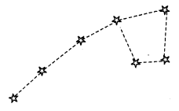 - Orion
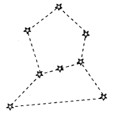
Question 7.
Name a winter constellation which looks like a distorted W. Where is it visible ?
Answer:
Cassiopeia is a winter constellation which looks like distorted W. It can be seen in the northern sky.
Question 8.
What is the cause of seasons on the earth ?
Answer:
The axis of rotation of the earth is not perpendicular to the plane of its orbit. This tilt causes a change in seasons.
Question 9.
Differentiate between equator plane and orbital plane of the earth.
Answer:
Equational plane is the plane of the equator. Orbital plane is the plane in which the earth revolves around the sun.
Question 10.
Name the red planet. How many moons does it have ?
Answer:
Mars is the red planet. Mars has two nloons or natural satellites.
Question 11.
Name the planet which has rings around it. Give one main characteristic of this planet.
Answer:
Saturn Has rings around it. Its main characteristic is that it is least dense among all the planets.
Question 12.
Give two main characteristics of Uranus.
Answer:
- Uranus rotates from east to west.
- Uranus has a highly tilted rotational axis.
Question 13.
Name the terrestrial planets. Why are they called by this name ?
Answer:
Mercury, Venus, Earth and Mars. They are known as terrestrial planets because their structure is rocky similar to that of the Earth.
Question 14.
Draw a labelled diagram to show the position of the Earth in its orbit when the length of the day is longest in the Northern Hemisphere.
Answer:
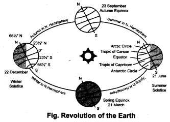
Question 15.
Name the planets that were discovered only after the invention of telescopes.
Answer:
Uranus, Neptune and Pluto.
Question 16.
What is universe ? Name two different kinds of heavenly bodies found in the universe.
Answer:
The vast unimaginable space which encompasses most distant stars, planet, etc., is called universe, Meteors and comets are the heavenly bodies in the universe.
Question 17.
Differentiate between meteors and stars.
Answer:
|
Meteors |
Stars |
| (i) Meteors are pieces of rocks floaing in space which get heated up on entering into earth’s atmostphere. | (i) Star is a ball of glowing gases. |
| (ii) Meteors do not have light of their own. | (ii) Stars have light of their own |
Question 18.
Give the differences between galaxy and constellation.
Answer:
Galaxy is a collection of stars consisting of millions of stars.
A constellation is a group of few stars whose arrangement can be compared to the figure of some animal or any other known material thing.
Question 19.
What is the source of energy in the Sun ?
Answer:
Nuclear fusion of hydrogen nuclei to helium takes place in the Sim.
Question 20.
What are the differences between the stars and planets.
Answer:
| Stars | Planets |
| (i) They are gaseous in nature. (ii) There are billions of stars. |
(ii) They are made up of rocks and metals. (ii) There are into planets. |
Question 21.
Show the relative position of stars
(i) Cassiopiea
(ii) Leo Major
Answer:
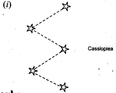
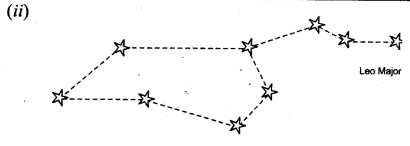
NCERT Solutions for Class 8 Science Chapter 17 – 3 Mark Questions and Answers
Question 1.
What is constellation ? Write two differences between a star and a constelation. [NCT 2011]
Answer:
A constellation is a group of few Stars whose arrangement can be compared to the figure of some animal or any known material thing:
| Star | Constellation |
| (i) It is a ball of glowing gases and is single. (ii) It does not remember any known figure or animal |
(i) A group of stars is known as constellation. (ii) Its formation resembles sortie animal or other known figure. |
Question 2.
What is the difference between meteors and meteorites ? [MSE (Chandigarh) 2007, 2006]
Answer:
| Meteors | Meteorites |
| Meteors are pieces of rocks floating in space which get heated up on entering the earth’s atmosphere. | Meteorites are meteors which do not bum in earth’s atmosphere and reach the surface of Earth. |
Question 3.
Name the:
- star nearest to the earth.
- two natural satellites of Mars.
- minor bodies of the solar system that are sometimes able to reach the earth.
Answer:
- Sun is the star nearest to the earth.
- Phobos and Deimos are two natural satellites of Mars.
- Meteorites are minor bodies that are sometimes able to reach the earth.
Question 4.
Name all the planets of the solar system in the order of their distance from Sun. [MSE (Chandigarh) 2006]
Answer:
Mercury, Venus, Earth, Mars, Jupiter, Saturn, Uranus, Neptune and Pluto.
Question 5.
What do you understand by a constellation ? Give two examples. [MSE (Chandigarh) 2005]
Answer:
Constellation are group of stars that appear to form a pattern, resembling a human figure or animal, e.g. Ursa major and Orion.
Question 6.
What is a shooting star ? Why does it bum completely before reaching the earth’s surface ? [DAV2005]
Answer:
Shooting star are the heavenly bodies consisting of small pieces of stones and metallic rocks travelling at very high speed. They are also known as meteors.
When meteors enter the earth’s atmosphere, they get heated up due to air friction and hence bum completely.”
Question 7.
Explain the structure of the moon.
Answer:
The moon’s surface is dusty and barren and has craters of different sizes. It also has a large number of steep and high mountains.
Question 8.
Draw the diagram of Orion and explain it.
Answer:
Orion is a winter constellation having seven or eight bright stars. It is also called the hunter as the three middle stars represent the belt of the hunter. The four bright stars appear to be arranged in the form of a quadrilateral.
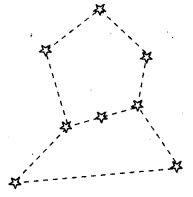
Question 9.
How can you locate the star-Sirius ?
Answer:
The star-Sirius is the brightest star in the sky and is located close to Orion. Imagine a straight line passing through the three middle stars. Look along this line towards east. This line will lead you to the Sirius.
Question 10.
- Name the natural satellite of the Earth.
- In how many days this satellite completes one revolution around the Earth ?
- In how many days this satellite revolves around its own axis ?
Answer:
- Moon is the natural satellite of the Earth.
- The Moon takes 271 days to revolve around the Earth.
- The Moon takes 271 days to spin on its own axis.
Question 11.
- Name the star nearest to the Earth (except Sun).
- How much time does the light from this star take to reach the Earth ?
- Name the gas found in stars.
Answer:
- Proxima Centuari is the star nearest to Earth except Sun.
- It’s light takes 4.5 years to reach the Earth.
- Hydrogen gas is present in the star.
NCERT Solutions for Class 8 Science Chapter 17 – 5 Mark Questions and Answers
Question 1.
Explain how artificial satellites help in transmission of television programmes over large areas. [MSE (Chandigarh) 2007]
Answer:
The picture and sound to be transmitted is first converted into electrical signals. These electrical signals are then converted into a special type of waves and transmitted in air from a transmitting antenna. The artificial satellites have special instruments which receive the signals transmitted by the earth stations. The signals so received are then amplified and retransmitted, by the artificial satellite that finally reach the televisions at different areas.
Question 2.
Why is the distance between stars expressed in light years ? What do you understand by the statement that a star is eight light years away from the earth ? [NCERT]
Answer:
The distance between the stars is millions of kilometers, so it is not convenient to express it in kilometers. It is expressed in light years. This means that light from this star 8 years to reach the Earth.
Question 3.
The radius of Jupiter is 11 times the radius of the Earth. Calculate the ratio of the volumes of Jupiter and the Earth. How many Earths can Jupiter accomodate ? [NCERT]
Answer:
Considering the planets to be sphere.
Volume of sphere = 4πr3/3
Suppose radius of earth r
Volume of Earth = 4πr3/3
Volume of Jupiter = 4π(11r)3/3
Volume of Jupiter/Volume of Earth = 4π/3 : 1331r3
Volume of Jupiter : Volume of Earth = 1331 : 1
Question 4.
Boojho made the following sketch (Fig.) of the solar system. Is the sketch correct ? If not, correct it. [NCERT]
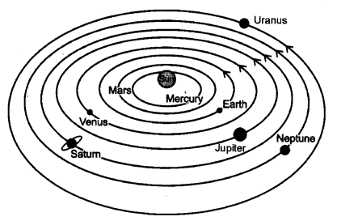
Answer:
No, the diagram is not correct. For correct diagram, please refer to Ans. 8 [5 Marks].
Question 5.
Give reasons why life is possible only on earth.
Answer:
Earth is the only planet having life because
- It is situated just at the right distance from the sun.
- It has the correct temperature for living organisms.
- Presence of water on earth.
- Suitable atmosphere around the earth.
- It has a blanket of ozone.
Question 6.
Name the Jovian Planets. Give their general characteristics.
Answer:
Jupiter, Saturn, Uranus and Neptune are known as Jovian planets. Their general characteristics are
- They are mainly gaseous.
- Mass and size of the outer planets are very large.
- They have a ring system around them.
- They have a large number of moons.
Question 7.
- Name the star nearest to the Earth.
- Why does it appear brighter and hotter than other stars ?
- How much time is required for light to reach the Earth from this star ?
- Give the composition of this star.
- What is the source of energy of this star ?
Answer:
- Sun is the star nearest to the Earth.
- The Sun appears brighter and hotter than other stars because it is nearest to the Earth as compared to other stars.
- The light from the Sun reaches the Earth in 8 minutes and 20 seconds.
- The Sim consists of 70% hydrogen gas, 28% helium gas and 2% of heavier elements such as carbon, nitrogen, oxygen, etc. ,
- In the Sun nuclear fusion of hydrogen to helium, with the release of large amount of energy takes place.
Question 8.
Draw a labelled diagram of solar system.
Answer:
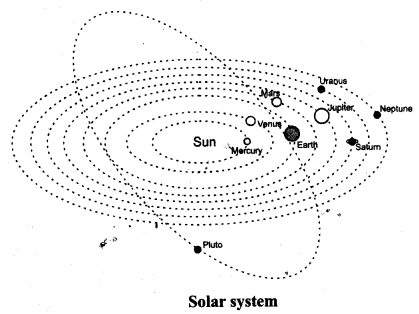
Question 9.
Compare the solar system with the structure of atom.
Answer:
| Similarities | Differences |
| (i) In an atom, the protons and neutrons are tightly packed in the nucleus and electrons revolve around it in fixed orbits. | (i) In an atom, the electrons can jump from one orbit to another. |
| (ii) In the solar system,’ the Sun is in the centre and the planets revolve around it in fixed orbits. | (ii) In the solar system, the planets remain in their orbits. They cannot change their orbits. |
Question 10.
- What is meant by revolution of Earth ?
- What is meant by rotation of Earth ?
- What is the direction of rotation of Earth ?
- How much time is required for rotation of Earth ?
- How much time is required for one revolution of Earth ?
Answer:
- The motion of the Earth around the sun is called revolution.
- The spinning of the Earth about its own axis is called rotation of the Earth.
- The earth spins from west to east.
- One complete rotation of the Earth takes 24 hours.
- One complete revolution of the Earth takes 365 1/4 days.
NCERT Solutions for Class 8 Science Chapter 17 MCQs
Question 1.
Out of the following, the only one that is a Galaxy, is
(a) Alpha centuari
(b) Jupiter
(c) Halley’s comet
(d) The Milky Way
Answer:
(d)
Question 2.
The constellation, of which pole star is a part, is
(a) Ursa Major
(b) Ursa Minor
(c) Orion
(d) Scorpio
Answer:
(b)
Question 3.
The large number of rocky objects, that lie between the orbits of Mars and Jupiter, are known as
(a) Comets
(b) Asteroids
(c) Meteorites
d) Meteors
Answer:
(b)
Question 4.
The largest planet in the solar system is
(a) Neptune
(b) Earth
(c) Jupiter
(d) Uranus
Answer:
(c)
Question 5.
Which one of the following is better known as morning and evening star ?
(a) Neptune
(b) Mercury
(c) Proxima centauri
(d) Venus
Answer:
(d)
More CBSE Class 8 Study Material
- NCERT Solutions for Class 8 Maths
- NCERT Solutions for Class 8 Science
- NCERT Solutions for Class 8 Social Science
- NCERT Solutions for Class 8 English
- NCERT Solutions for Class 8 English Honeydew
- NCERT Solutions for Class 8 English It So Happened
- NCERT Solutions for Class 8 Hindi
- NCERT Solutions for Class 8 Sanskrit
- NCERT Solutions